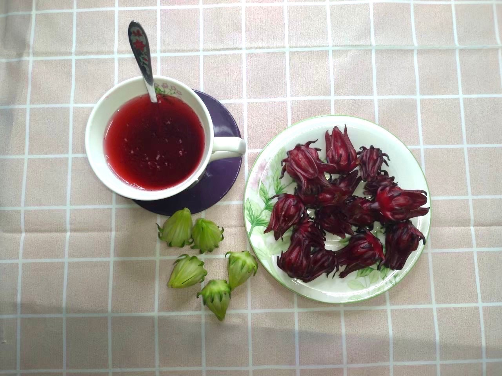

洛神花果醬
首頁
>> 水果茶系列 >> 洛神花果醬

洛神花果醬
酸酸甜甜的滋味，不管是用熱水沖泡亦或是作為果獎塗抹，皆有絕佳的風味
減糖配方，清爽少負擔
訂購資訊：
訂購數量(包)：
#交易付款方式：轉帳付款
#運費計算：
運送方式/運費
門檻
運費
賣貨便
未滿1100元
運費38元
滿1100元
免運
宅急便
未滿10包
運費100元
滿10包
免運費
洛神花果醬
酸酸甜甜的滋味，減糖配方，清爽少負擔
#產地來源：嘉義縣鹿草鄉
#原料：洛神花、砂糖
#產品售價：一瓶200元
#重量規格：一瓶370ml
#運費計算：宅急便運送10包以下，運費每次100元，10包以上免運
#保存：冷藏3個月，開瓶後請儘速食用完畢
#商品介紹：自產自銷，採預訂制
待採收後再行烘培，依訂購順序付款後新鮮出貨
#食用辦法：可以厚塗抹於吐司、亦可以用熱水泡茶來喝。
吃的時候還會有洛神花碎碎的果粒
不添加人工色素、果膠、以及防腐劑，讓您可以安心享用。